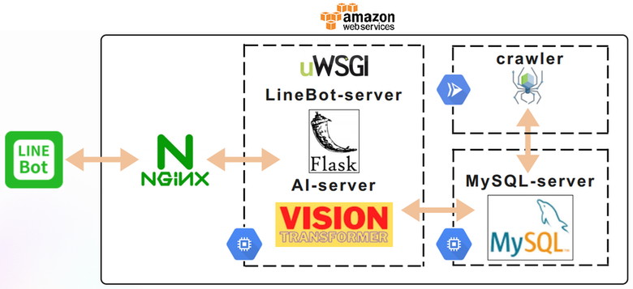
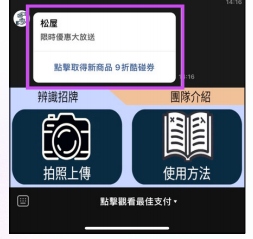
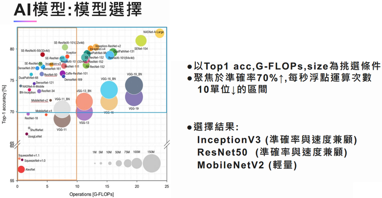
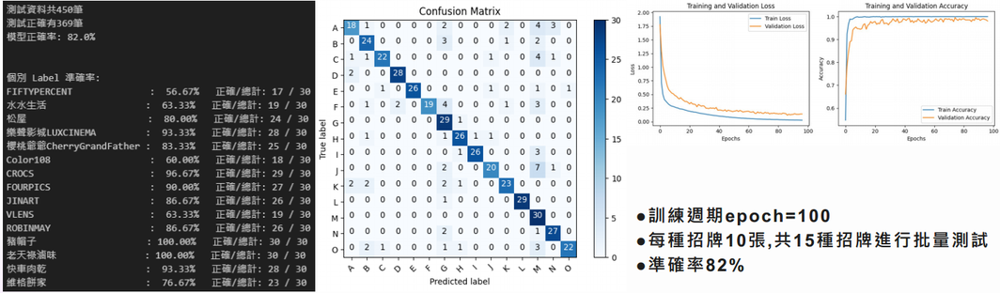
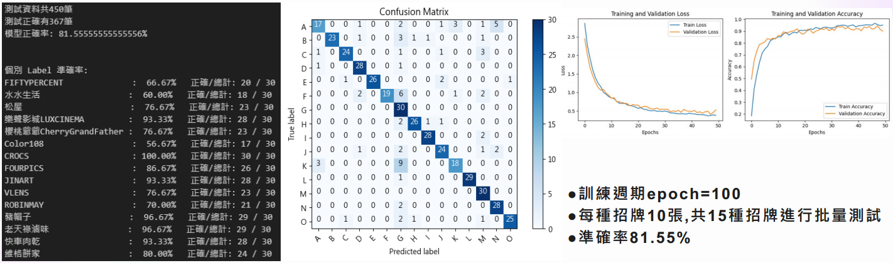
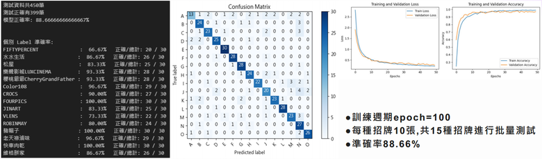
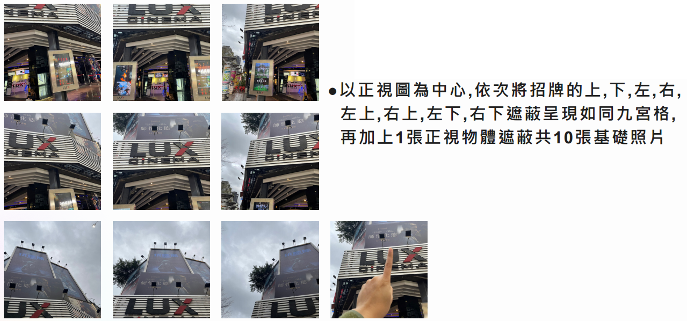
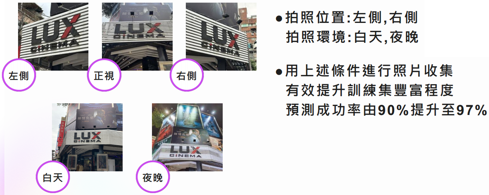
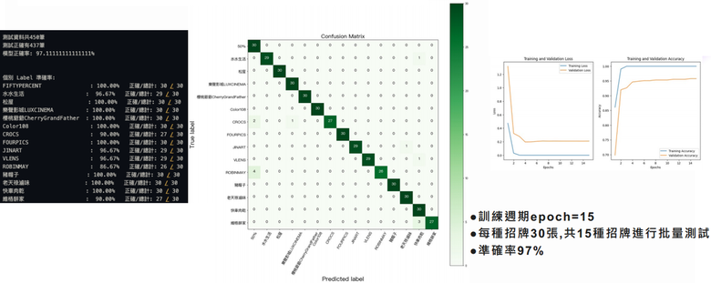

English ｜ 繁體中文
Storefront-Sign Classification with ViT + Best-Cashback Recommendation via LineBot
Standing outside a shop? Photograph its sign and send it to the LineBot — the system classifies the store type and instantly replies with the TOP-3 highest-cashback payment methods for that category, with links. No extra app required, and even small local shops are covered.
The project photographs storefront signs, automatically classifies the store type, queries the database for that category's TOP-3 highest-cashback payment methods, and replies through LineBot with recommended cards and links.
User photographs a storefront sign via LineBot
│
▼
Flask app server (AWS EC2)
│
▼
ViT (Vision Transformer) classifies the store type
│
▼
MySQL View queries the category's TOP-3 cashback options (AWS RDS)
│
▼
LineBot Flex Message carousel returns recommended cards + links

Architecture: front/back-end separation; MySQL Views integrate complex payment rules across tables.
| Category | Stack |
|---|---|
| Image classification | ViT (Vision Transformer); ResNet50 / InceptionV3 / MobileNetV2 compared during model selection |
| Training framework | PyTorch |
| Data strategy | Multi-time-of-day (morning/evening), multi-angle, nine-grid + occlusion capture augmentation |
| Backend deployment | Flask + MySQL (Views for cross-table integration) on AWS EC2 / RDS |
| Interface | LineBot + FlexMessage (carousel) |

Merchant-partnership coupon concept.
The development was not a straight line of successes but a chain of "problem → verify → fix". Key milestones:
Solution: front/back-end separation for better UX and system flexibility, easing model deployment and module expansion. Given the diversity and complexity of payment rules, the database uses MySQL Views for cross-table integration and fast lookups (diagram in "System Architecture" above).
Solution: focused on the region of Top-1 accuracy ≥ 70% with ≤ 10 GFLOPs, shortlisting ResNet50, InceptionV3, and MobileNetV2.

Model selection: the accuracy × compute trade-off region.
Solution: expanded the photo dataset with different scenes (morning, evening, etc.), raising ResNet50 / InceptionV3 / MobileNetV2 accuracy from 75% to 81–88%.

ResNet50 training results.

InceptionV3 training results.

MobileNetV2 training results.
Solution: excluded options requiring prerequisite tasks, new-customer status, or with reward points worth less than 1 — keeping recommendations easy to understand.
Solution: Flex Message carousel — swipe left/right to browse the options.
Solution: adopted the then newly released ViT — slightly slower inference, but accuracy rose steadily to 90%.
Solution: massively expanded the photo set using a nine-grid layout + occlusions + left/front/right angles, raising ViT accuracy to 97%.

Nine-grid + occlusion capture strategy.

Multi-angle and time-of-day data augmentation.

Final ViT training results (97%).